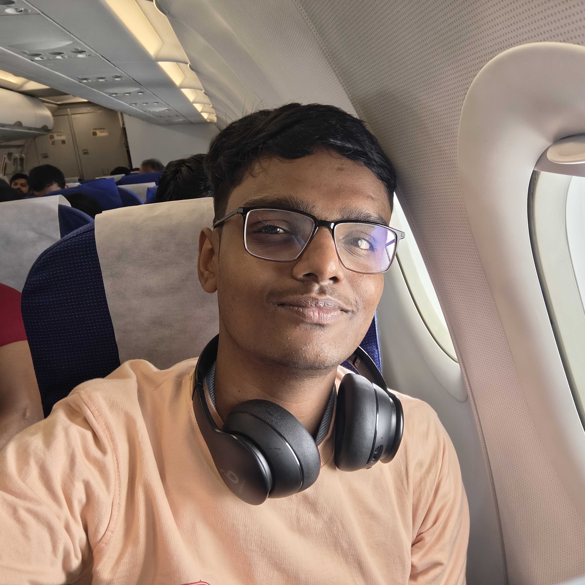

I’m an undergraduate researcher at IISER Berhampur. My academic journey is characterized by a clear division of research objectives: my current focus lies in Molecular Toxicology & Hepatology—studying botanical compounds like Apigenin—while my long-term goal is to innovate in Gene Editing & Metabolic Disorders using precision genomic therapeutics.
Pursuing an Integrated BS-MS in Pure Science, I combine insights from biochemistry, cell viability assays, and computational models to solve complex biological questions. I am currently executing my DBS research internship on Apigenin dose-response pathways in hepatocytes under Dr. Prabhat Singh (Scientific Officer, DBS IISER Berhampur).
I strongly believe science should transcend laboratory walls and language barriers. Proficient in English, Hindi, Marathi, and exploring German and Chinese, I actively communicate science to rural and public audiences. Inspired by the ideals of using biotechnology for the greater good, I strive to uncover mechanistic insights that can improve clinical care and human health.
Research Intern, DBS (May 2026 - Present) | Advisor: Dr. Prabhat Singh
Current Focus: Molecular Toxicology & Hepatology | Long-term Goal: Gene Editing & Metabolic Disorders
Investigating the dual role of Apigenin in liver health under Dr. Singh. Concurrently modeling CRISPR-Cas9 correction systems for insulin resistance pathways. Recently appointed as a member of the Publications & Outreach Council to direct public-facing science communication.
Fostered skills in critical thinking and structural logic. Competed actively in robotics championships and Model United Nations, and secured the runner-up position at the State Level Debate Championship 2023.
Developed early leadership and academic curiosity through quiz clubs, science presentations, and student governance roles.